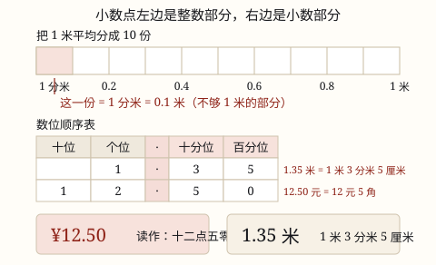

认识小数
小数是十进制分数的另一种写法：把 1 平均分成 10 份，取 1 份就是 0.1。0.1 元是 1 角，0.1 米是 1 分米。
| 所属主题 | 数的意义和性质 |
|---|---|
| 所属模块 | 数与代数 |
| 课标学段 | 第二学段（3~4年级） |
| 前置知识 | 认识厘米和米 |
| 核心素养 | 数感符号意识量感 |
课标要求
| 数与代数·数与运算 | 结合具体情境，初步认识小数和分数，感悟分数单位（例9）；会同分母分数的加减法和一位小数的加减法。 印刷第 20 页 行为动词：理解 |
|---|---|
| 数与代数·数与运算 | 会运用数描述生活情境中事物的特征（例10），逐步形成数感、运算能力和初步的推理意识。 印刷第 21 页 行为动词：运用 |
说明
体检量身高，结果 1.35 米——比 1 米多，又不到 2 米。多出来的那一截怎么用「米」记下来？这时候就要请出小数。
把 1 米平均分成 10 份，每份长 1 分米。1 分米是多少米？它是「1 米的十分之一」，也就是把 1 分成 10 份取 1 份，写成 1/10 米；换个写法就是 0.1 米，读作零点一。同样地，把 1 元平均分成 10 份，每份是 1 角，也就是 0.1 元。
小数点左边是整数部分，右边是小数部分。小数部分的第一位叫十分位，数的是「有几个十分之一」；第二位叫百分位，数的是「有几个百分之一」。所以 1.35 米 = 1 米 + 3 个 0.1 米 + 5 个 0.01 米，也就是 1 米 3 分米 5 厘米。
一句话说清：小数不是另一套新数，它只是十进制往下接着数——整数部分数「有几个 1、几个 10」，小数部分接着数「有几个 0.1、几个 0.01」。不够 1 的那一部分，就用小数记。
使用场景
超市价签：一盒牛奶 12.50 元，说的就是 12 元 5 角。价签上的小数点天天都能看到。
量身高的体检表：1.35 米 = 1 米 3 分米 5 厘米，比写「135 厘米」更能一眼看出「比 1 米多一点」。
看体温计：36.5 ℃，比 36 度高半度——这半度就是小数点右边第一位的 5。
体育成绩：50 米跑 8.6 秒、立定跳远 1.45 米，比赛成绩常常要细到十分之一。
电子秤称重：一袋苹果 2.5 千克，说的是 2 千克再多半千克。
注意点
小数部分要一位一位读。12.50 读作「十二点五零」，不是「十二点五十」；1.35 读作「一点三五」，不是「一点三十五」。
0.1 和 0.01 不是一回事。0.1 元是 1 角，0.01 元是 1 分；0.1 米是 1 分米，0.01 米是 1 厘米。小数点右边第一位是十分位，第二位才是百分位。
比大小不能数位数长短。0.5 比 0.12 大——0.5 有 5 个 0.1，0.12 只有 1 个 0.1，先比十分位就够了。
小数点写错位置，数就变了 10 倍。1.35 米 和 13.5 米 差得远，写小数时点上那一点，位置别挪。
小数点右边不论写几位，都不到 1。1.35 米的小数部分是 3 分米 5 厘米，不是「3 米 5 米」；别把小数部分的数字当成几个 1。
为什么是这样

图 1：小数点左边数「几个 1」，右边第一位（十分位）数「几个 0.1」
算理推导
先想一个麻烦：用「米」作单位量身高，量出来比 1 米多、比 2 米少。整数只能记「有几个 1 米」，多出来的那一截没法写——需要一种记「不够 1 的部分」的办法。
办法是继续用十进制：把 1 米平均分成 10 份，每份长 1 分米。这一份用米作单位是多少？它是 1 米的十分之一，也就是 1/10 米。小数只是给这个分数换了个写法：整数部分写 0（不够 1 米），右边第一位写 1（有 1 个十分之一），中间点一个小数点把它们隔开——0.1 米。
为什么非得有个小数点？因为左右两边数的东西不一样：左边数「有几个 1」，右边数「有几个十分之一」。没有这个点，0.1 和 01 就分不清了——小数点就是整数部分和小数部分的分界线。
再往下分：把 1 米分成 100 份，每份 1 厘米，就是 1/100 米，写成 0.01 米，占小数点右边第二位——百分位。每往右一位，单位就缩到原来的十分之一；这和整数「每往左一位，单位扩大 10 倍」是同一条规律。
回头看 1.35 米：整数部分 1（1 个 1 米），十分位 3（3 个 0.1 米 = 3 分米），百分位 5（5 个 0.01 米 = 5 厘米）。每一位的数字都在数「有几个这样的单位」，和 135 这个整数数「几个百、几个十、几个一」是完全一样的思路。
所以 0.5 和 0.12 谁大就很清楚了：0.5 有 5 个 0.1，0.12 只有 1 个 0.1，只看十分位就够——0.5 更大。想成钱最直观：5 角 比 1 角 2 分 多。
动手实验
准备 1 枚 1 元硬币和 10 枚 1 角硬币：10 个 1 角正好换 1 元，所以 1 角就是「1 元的十分之一」，写 0.1 元；再想一想 1 分是多少钱（把 1 元分成 100 份），写 0.01 元。接着用米尺量自己的身高：先数出「比 1 米多出来的那一截」有几分米、几厘米，再写成小数（多出 3 分米 5 厘米，身高就是 1.35 米）。最后剪两段绳子，一段 0.5 米、一段 0.12 米，比一比谁长——你会确信：位数多，数不一定大。
按场景的例题
例 1（场景：购物消费） 超市价签上的小数
一盒牛奶的价签上写着 12.50 元，这是几元几角？这个数怎么读？
解：小数点左边是整数部分：12 表示 12 元。右边第一位（十分位）是 5，表示 5 个 0.1 元，也就是 5 角；第二位（百分位）是 0，表示 0 分。读数时小数部分要一位一位念，念成「五零」。
答：12 元 5 角，读作「十二点五零」。
例 2（场景：计量与估算） 体检表上的身高
小明的身高是 1.35 米，用米、分米、厘米说一说他有多高？
解：整数部分 1 是 1 个 1 米，就是 1 米；十分位的 3 是 3 个 0.1 米，0.1 米 = 1 分米，所以是 3 分米；百分位的 5 是 5 个 0.01 米，0.01 米 = 1 厘米，所以是 5 厘米。
答：1 米 3 分米 5 厘米（也就是 135 厘米）。
例 3（场景：家庭与年龄） 看体温计上的 36.5
体温计显示 36.5 ℃，这个小数怎么读？小数点右边的 5 表示什么？
解：整数部分 36 读作三十六，小数部分一位一位读，读作「三十六点五」。十分位的 5 表示 5 个 0.1 度，也就是半度（5 个十分之一度）。
答：读作「三十六点五」；5 表示 5 个 0.1 ℃，也就是半度，体温是 36 度半。
例 4（场景：校园生活） 50 米跑成绩谁更快
小华 50 米跑用了 8.6 秒，小刚用了 8.15 秒，谁跑得快？
解：先比整数部分，都是 8；再比十分位，6 > 1，所以 8.6 秒 > 8.15 秒。跑步用时越少越快，所以 8.15 秒的同学更快。注意不能因为 8.15 的小数位数更多就认为它更大。
答：小刚跑得快（8.15 秒 < 8.6 秒）。
常用推论
小数点右边第一位是十分位，计数单位是 0.1（1/10）；第二位是百分位，计数单位是 0.01（1/100）。
1 \text元 = 10 \text角，1 \text角 = 10 \text分，所以 0.1 \text元 = 1 \text角，0.01 \text元 = 1 \text分。
1 \textm = 10 \textdm = 100 \textcm，所以 0.1 \textm = 1 \textdm，0.01 \textm = 1 \textcm。
一位小数表示十分之几，两位小数表示百分之几——小数是分母为 10、100 的分数换了一种写法。
比较小数的大小：先比整数部分，整数部分相同再依次比十分位、百分位，和整数比大小一样从高位比起。
易错点
错把 12.50 读作「十二点五十」。
为什么错小数部分不再按整数的读法来念，要一个数字一个数字念。12.50 的小数部分是 5 个 0.1 和 0 个 0.01，念成「五十」会让人以为有 50 个什么东西。
正确读作「十二点五零」；同样地，1.35 读作「一点三五」，不是「一点三十五」。
错认为 0.5 比 0.12 小，理由是 0.12 有两位小数，「数字更长」。
为什么错比大小要比相同数位上的数，不是比数字串的长短。0.5 有 5 个 0.1，0.12 只有 1 个 0.1，十分位上 5 > 1。
正确0.5 > 0.12。想成钱最直观：5 角 比 1 角 2 分 多。
错把 0.1 米 当成 1 厘米。
为什么错0.1 是「把 1 分成 10 份取 1 份」，1 米分成 10 份每份是 1 分米；1 厘米是把 1 米分成 100 份取 1 份，应当写成 0.01 米。
正确0.1 \textm = 1 \textdm = 10 \textcm，而 0.01 \textm = 1 \textcm。小数点右边第一位是分米，第二位才是厘米。
错把 1.35 米 说成「1 米 35 分米」。
为什么错小数点右边第一位是分米、第二位才是厘米，3 是 3 分米；35 分米比 3 米还长，根本不是「不够 1 米的部分」了。
正确1.35 米 = 1 米 3 分米 5 厘米（也就是 135 厘米）。
直观理解
把小数想成尺子上继续往下刻的细刻度：整数数的是「有几个整米」，小数接着数「有几个分米、有几个厘米」。就像人民币里 1 元下面还有角和分——不够 1 元的那部分，用 0.1 元、0.01 元记下来就是了。小数不是新的一套数，它只是把「不够 1 的那截」接着往下数。
小数点，分两家；左边是整数，右边是小数。右边第一位，叫做十分位；0.1 是一角，也是一分米。